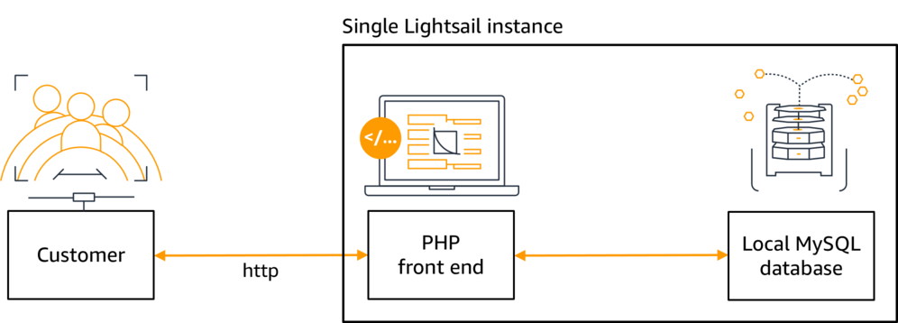

Next: Task 3---Connect to an Amazon Lightsail Database, Previous: Task 1---Deploy the Lab Infrastructure, Up: Deploy and Scale a Lamp Application [Contents][Index]
In this task you will deploy a LAMP stack application into your previously launched Amazon Lightsail instance by copying in the application code and supplying the parameters to connect the PHP front end and the local MySQL database. When you are finished, both the Apache/PHP front end and the MySQL database will be running on the same host.
This demonstration video will take you step by step through the lab process.
| • Deploy a LAMP Stack Application: |